Georeferencing maps from the State Library of Victoria
Turning historic maps into geospatial data
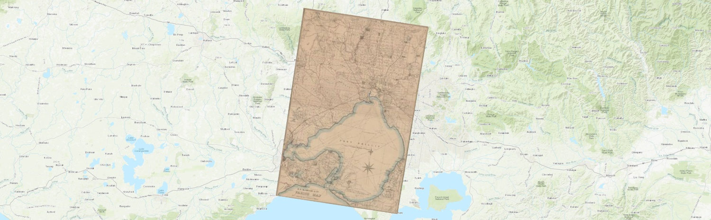
This is an experimental project developed during my time as Creative Technologist-in-Residence at the SLV LAB. While playing around with IIIF and AllMaps, I wondered if it might be possible to connect a few things up and make it easy for people to georeference SLV's digitised maps. This is the result!
Quick start
We're using AllMaps to georeference digitised maps from the SLV collection, and a userscript to connect the SLV to AllMaps. If you understand the basics of georeferencing and just want to get to work, here's what you need to do:
click on the button to open the map in the AllMaps editor
mask the edges of the map (if necessary)
add ground control points to georeference the map
More information on each of these steps is provided below.
Background information
What is georeferencing?
Georeferencing (or georectifying) relates a digitised map to real world geography. It describes the map's position and extent using geospatial coordinates – turning historic documents into geospatial data that can be visualised, indexed, and manipulated.
To georeference a historic map, you need to identify points in common between the map and our modern geocoordinate system. These are known as ground control points (GCPs). Once enough GCPs have been assigned, the historic map can be warped and stretched to fit the globe.
A georeferenced map can be layered on top of a modern basemap, allowing us to investigate changes over time. The positional data can also be indexed, making it possible to search for maps by location. Georeferencing opens historic maps to a range of new research uses.
Because IIIF is a standard, developers can build tools and platforms that work interchangeably across many GLAM collections. AllMaps is one such platform, building on top of IIIF to add new functions to digitised maps.
What is AllMaps?
The AllMaps project has developed an extension to IIIF that defines how geospatial data can be saved as annotations to IIIF images. Based on this, they built a suite of tools and interfaces for creating, viewing, and exploring georeferenced maps.
While other tools, such as MapWarper and QGIS, also georeference digitised maps, AllMaps uses IIIF to make the process as simple and efficient as possible. Instead of having to upload images manually, you give AllMaps an IIIF url and it uses existing infrastructure to load and manipulate the image, saving the results as IIIF annotations.
What is a userscript?
Userscripts are little bits of Javascript code that change the way web pages look and function. They're like browser extensions, but without all the packaging. You install userscripts with a userscript manager – such as TamperMonkey or ViolentMonkey.
Userscripts are handy because they let us modify GLAM collection interfaces to fix problems or add new features. There's some examples in this blog post.
For this project, I've created a userscript that adds links between the SLV image viewer and AllMaps. This makes it easy to open a map in the AllMaps editor for georeferencing.
Georeferencing your first map
1. Install the SLV/AllMaps userscript
If you haven't already, add a userscript manager such as ViolentMonkey or TamperMonkey to your browser. These are browser extensions or add-ons that are installed from standard web stores – just follow the instructions for your preferred browser. Note that if you're using TamperMonkey with Chrome you might need to explicitly give it permission to run userscripts.
Once your userscript manager is installed, go to my SLV/AllMaps userscript (published as a GitHub Gist). To install the userscript, click on the button at the top of the code box. Your userscript manager will display a window with details of the userscript, and ask you to confirm that you want to proceed. Click 'install' to complete the installation.
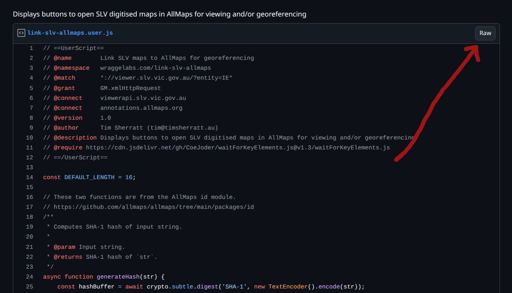
Click on the button to install the userscript.
To test if it's working, head to this map in the SLV's digitised image viewer. If you scroll down the page you should see a new 'Georeferencing' section added by the userscript.
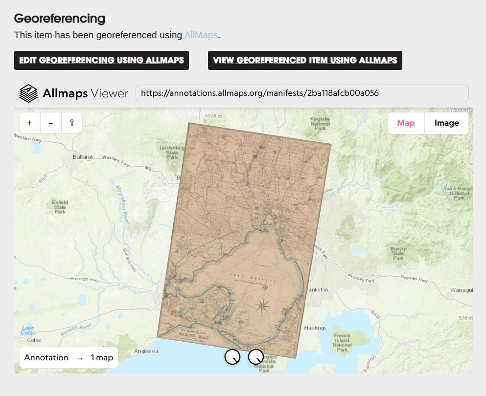
The userscript adds a 'Georeferencing' section to the SLV image viewer.
What does the userscript actually do? It runs automatically when you load the SLV image viewer and then:
it checks the metadata of the digitised item to see it it's a map (or something that contains maps, like an atlas or street directory)
if it looks like a map, it generates an AllMaps identifier using the item's IIIF manifest url and checks with AllMaps to see whether the item has already been georeferenced
it adds a 'Georeferencing' section to the page, with a button to georeference the item (or edit the existing georeferencing)
if the item has already been georeferenced, it adds a button to view the item in the AllMaps Viewer, and embeds a live preview
2. Find a digitised map in the SLV collection
You can just start searching the SLV Catalogue for maps and use the filters to limit the results to items that are held by the Library and available online.
If you're not sure what to search for, head to the Maps collection page for some ideas. In particular, I'd love it if we could start georeferencing the MMBW plans.
Once you've found a digitised map in the catalogue, hit the 'Click to view online' link to open the image viewer.
3. Open the map in the AllMaps Editor
Once the image viewer has loaded, scroll down the page to the 'Georeferencing' section added by the userscript. If the map hasn't been georeferenced, you'll see a button. Click on the button to open the map in the AllMaps Editor.
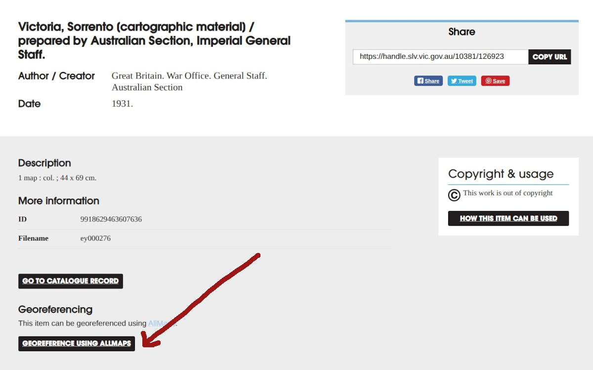
Click on the button to open the AllMaps Editor
4. Select an image
The AllMaps Editor has four panes – Images, Draw mask, Georeference, and Results. It opens in the Images pane. If you're georeferencing a single map, there may only be one image. But if you're working on an atlas or street directory might be many images. Click on an image to select it, then click on the Draw mask tab.
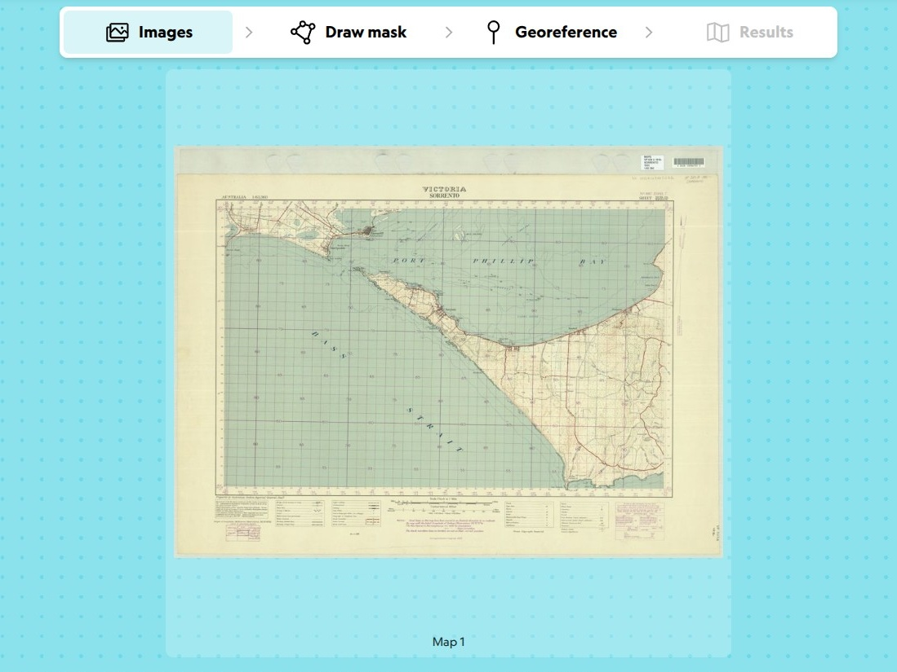
Select an image then click the Draw mask tab
5. Mask the edges of the map
Maps can include margins, legends, titles and other information around the edges of the actual map. For accurate georeferencing, it's good to exclude these sections by masking them.
To mask a map, click around the border of the map to add nodes. The nodes will automatically connect to draw a line. Click on the first node to connect up the lines and complete the mask. You can edit the mask by dragging nodes, or by clicking on a line to add a new node. For a simple rectagular map you might only need four nodes, but more complex shapes will require extra clicking and dragging to get the mask to fit.
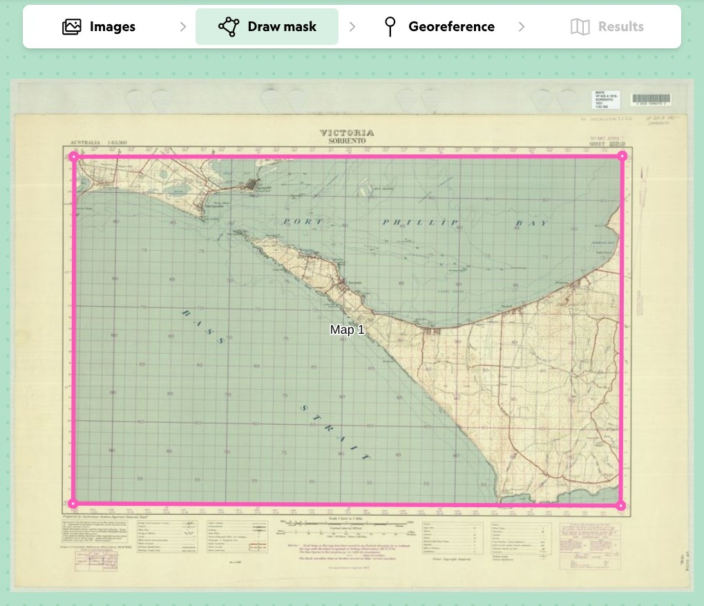
Click around the edges of the map to draw a mask
Once you're happy with the mask, click on the Georeference tab.
6. Add ground control points
In the Georeferencing pane, the digitised map is displayed alongside a modern basemap. You'll probably need to move around the modern basemap to match the location of the digitised map. Use your mousewheel to zoom in and out, and click and drag to pan.
Once you have the same location displayed on both maps, you can start looking for common features. Road intersections can be good, as can natural features like rivers of coastlines. When you find a shared reference point, click on it in both maps. A pink numbered dot will appear. This means you've successfully defined a ground control point (GCP). Yay!
Repeat this process to add more GCPs. For best results, try to find a range of points spread across the whole map.
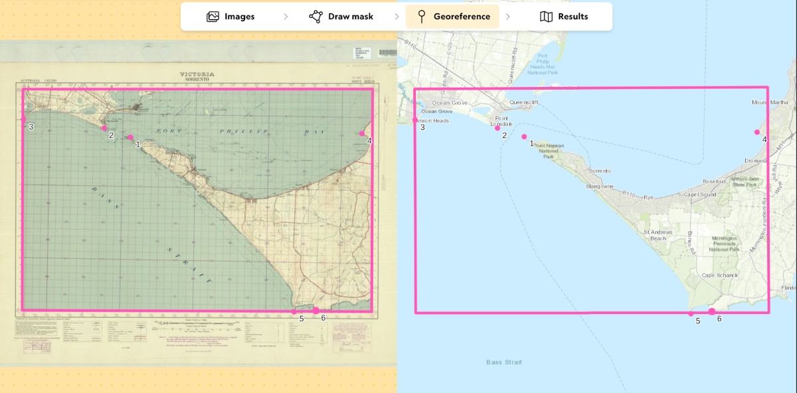
Click on both maps to add ground control points
If you make a mistake while adding GCPs, don't worry! Click on the list icon at the bottom of the editor screen to display all the current points. Click on the delete icon to remove any mistakes.
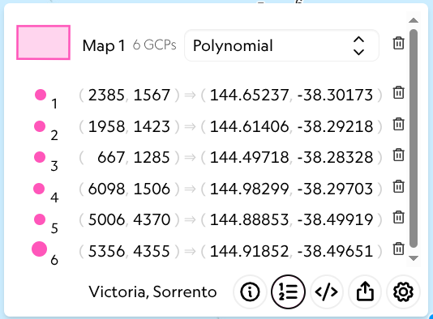
Click on the delete icon to remove a points
Once you're added all your GCPs, click on the Results tab.
7. View the results
The Results pane displays the digitised map as an overlay on top of the modern basemap. The GCPs are used to align the digitised map with modern coordinates, so the map will often appear skewed or warped.
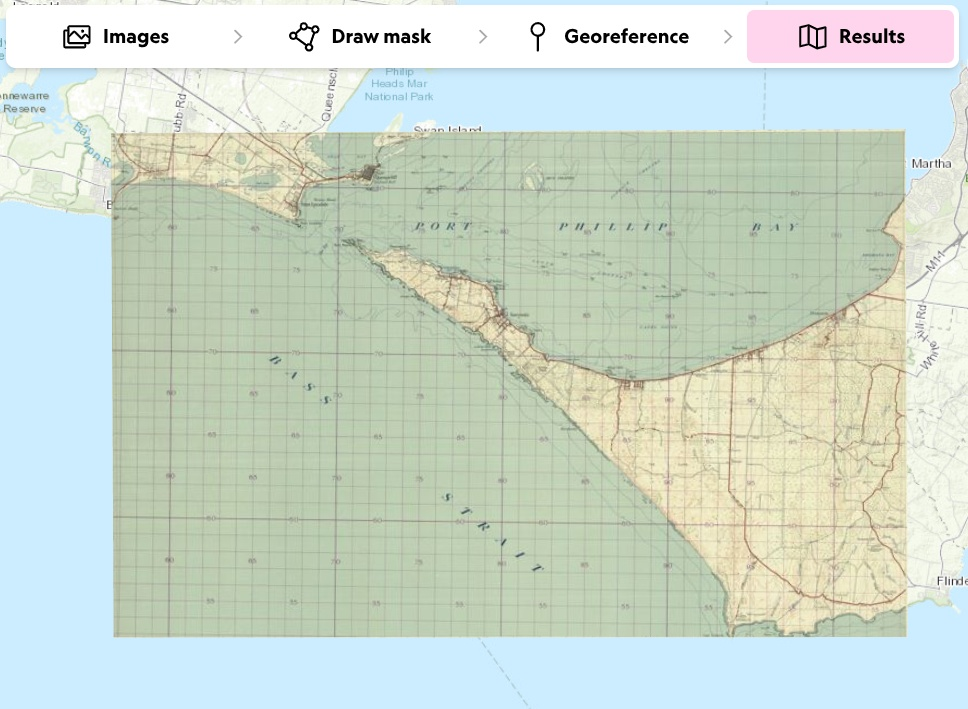
The digitised map aligned with modern coordinates
If you're not happy with the results of your georeferencing, you can return to the Draw mask or Georeference panes to make adjustments. The results are automatically saved to AllMaps.
8. View, share, and download
Click on the share icon at the bottom of the editor window to display options for viewing, sharing, and downloading your geoferenced map.
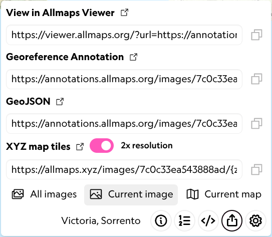
Click on the share icon for options
Click on the 'View in Allmaps Viewer' link to open the map in the AllMaps Viewer. The viewer includes some knobs to twiddle at the bottom of the screen. The left knob adjusts the opacity of the map. The right knob removes the map's background colour. Click on a knob and drag left or right to change setting. To remove the background completely, you can also just hit the 'b' key. Adjusting these settings makes it easier to see differences between the two maps.
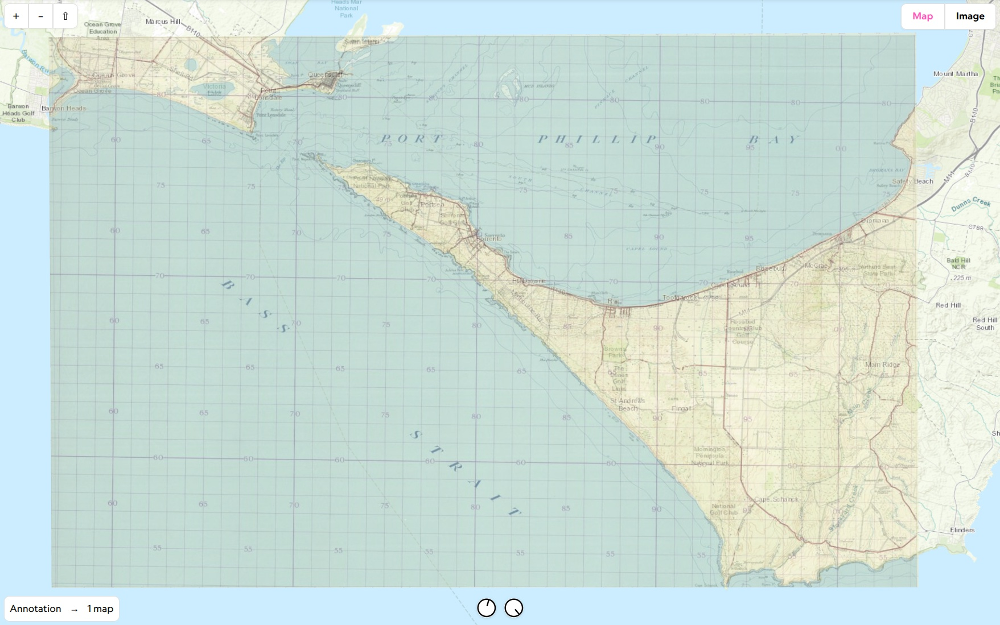
The opacity of the digitised map has been decreased to show more detail from the basemap
If you're georeferencing an item that includes multiple maps, click on the All images tab at the bottom of the share options. If you click on the open viewer link now, you'll see all the georeferenced maps in the current item.
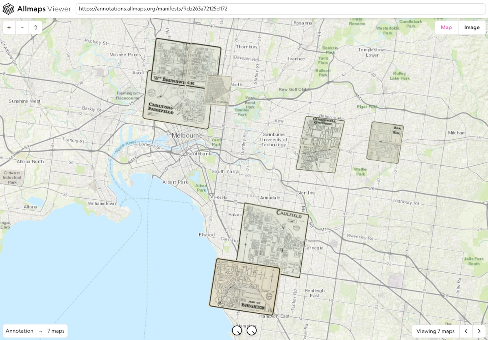
View of an item containing multiple georeferenced maps
To share your map/s, just copy the viewer url.
You can also download the data generated by the georeferencing process as either an IIIF annotation, or as GeoJSON.
9. Repeat!
Congratulations on georeferencing your first SLV map! Your contribution will soon appear on the project dashboard (it's updated every two hours).
If you're working on an item that contains multiple maps, go back to step 4 to continue. Otherwise find a new map!
Georeferencing in AllMaps without the userscript
In theory, you don't need the userscript to georeference SLV items in AllMaps. All you need is the url of an item's IIIF manifest. However, there's a couple of problems with the SLV's manifests at the moment, so the userscript feeds them through a proxy service I created to fix the problems before passing the link on to AllMaps.
To generate a link to a proxied manifest, first grab the item's IE identifier from the url of the digitised item viewer. For example, the identifier in this url https://viewer.slv.vic.gov.au/?entity=IE15485265&mode=browse is IE15485265. Once you have the identifier, add it to the end of the url https://wraggelabs.com/slv_iiif/. For example, https://wraggelabs.com/slv_iiif/IE15485265. You can then supply this url to the AllMaps editor.
Data and licensing
AllMaps doesn't have any user accounts or authentication. Anyone can georeference any map with a IIIF url. This means it's possible, though unlikely, that someone could come along and re-edit your georeferenced map.
All the georeferencing data created through AllMaps is available as open data under a CC0 licence.
As a backup, and to capture changes over time, I've created a repository that automatically downloads georeferenced data relating to SLV maps every two hours.